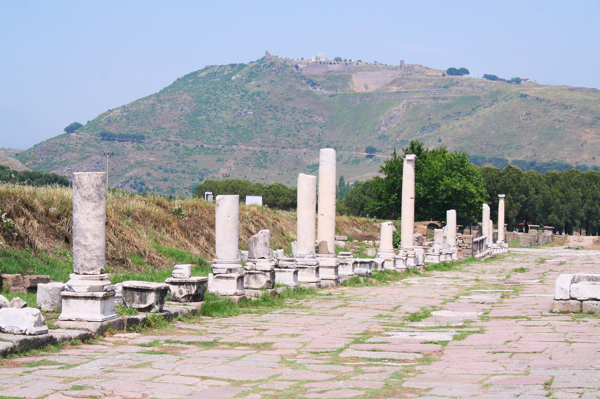

Pergamum (Pergamos)

- Find Name
- Pergamum (Pergamos)
- Description
- A hilltop city of western Asia Minor at modern Bergama, capital of the Attalid kingdom that ruled much of Asia Minor in the 3rd and 2nd centuries BC, and later a leading city of the Roman province of Asia. Carl Humann's excavations from 1878 uncovered the steep acropolis with its theatre, library, and palaces, the sanctuary of Asclepius below the hill, and the Great Altar of Zeus, a throne-like monument whose sculpted frieze of the gods' battle with the giants was removed to Berlin and reconstructed in the Pergamon Museum. When the last Attalid king, Attalus III, died in 133 BC, he bequeathed his kingdom to Rome, and Pergamum became a centre of the imperial cult, with temples to Augustus and later emperors.
- Historical Period
- Hellenistic to Byzantine, 3rd century BC onwards
- Evidence Class
- Direct
- Interpretations
- Scholars agree Bergama is biblical Pergamos (KJV) / Pergamum. Whether 'Satan's seat' means the Great Altar of Zeus, the imperial cult, or the Asclepieion is debated — Ramsay argued for the altar, others for emperor worship — and the entry claims no single identification; the letter's point stands on any of them. Antipas's martyrdom is known only from this letter and later tradition, and no excavated memorial to him has been identified.
- Alternative Names
- Pergamos (KJV); Bergama
- Related Places
- Related Books
- Related People
- Scripture Illuminated
- Biblical Significance
- Pergamum is the third of the seven churches: 'I know thy works, and where thou dwellest, even where Satan's seat is' (Revelation 2:13). The letter praises a church that held fast 'even in those days wherein Antipas was my faithful martyr, who was slain among you' (Revelation 2:13), while warning against the teaching of Balaam and the Nicolaitans (Revelation 2:14-15). The excavated acropolis explains the letter's setting: a city crowned with pagan altars and emperor worship, where confessing Christ meant living, visibly, where another throne claimed the hill.
- Artifact Date
- Attalid capital, 3rd-2nd centuries BC; Great Altar of Zeus, c. 180-160 BC; Roman acropolis and Asclepieion
- Current Location
- In situ, Turkey (Great Altar reconstructed in the Pergamon Museum, Berlin)
- Date Discovered
- 1878 onwards (Carl Humann, German Archaeological Institute)
- Discovery Location
- Bergama, Izmir Province, western Turkey
- Timeline Era
- Early Church
Awaiting Review Not yet checked against scholarly sources. Treat its claims as provisional until this entry is reviewed. About verification
Last reviewed: not yet reviewed